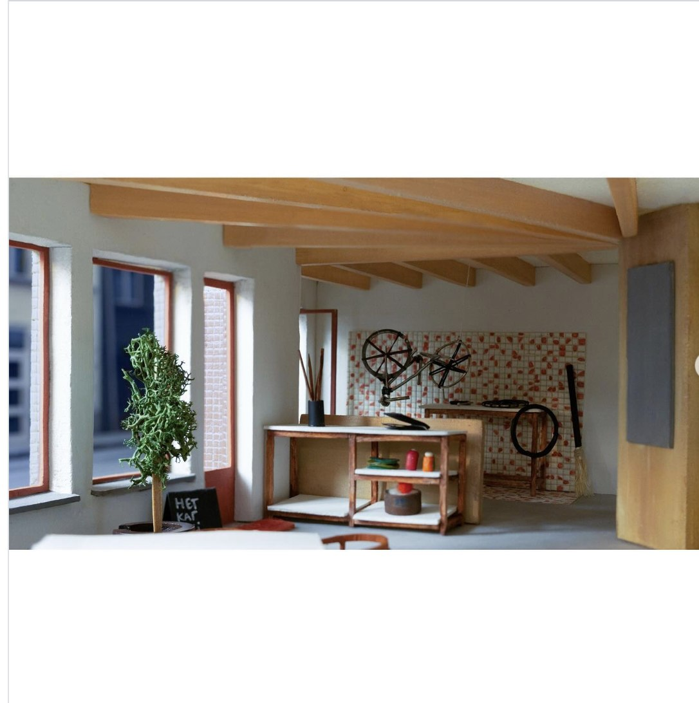
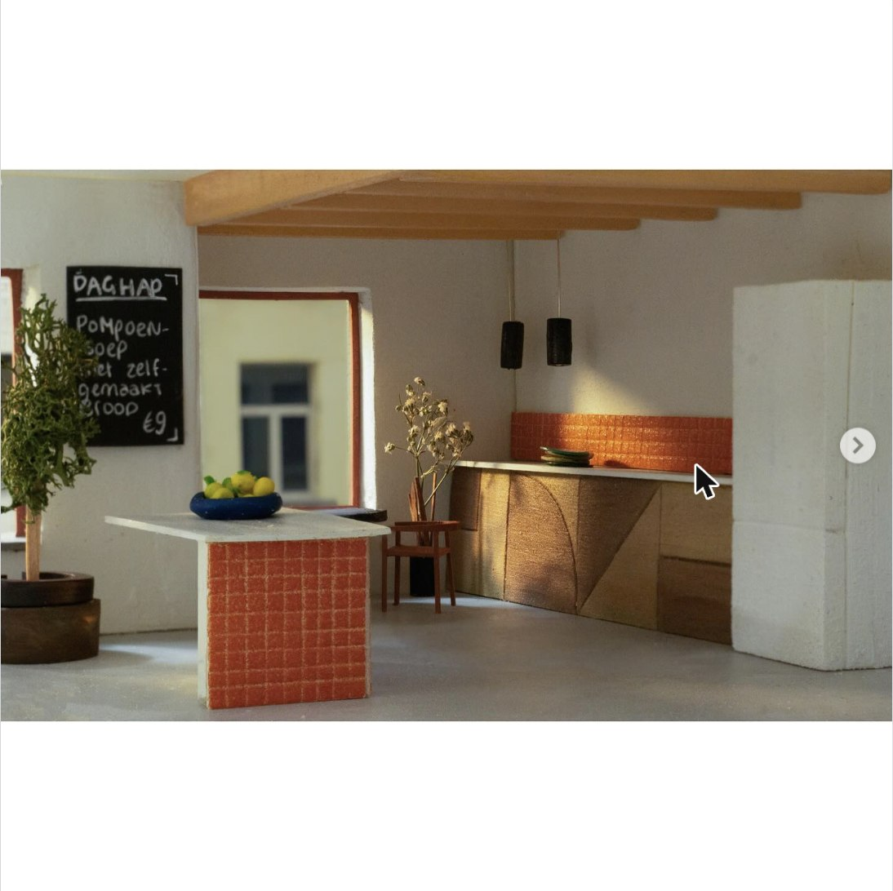
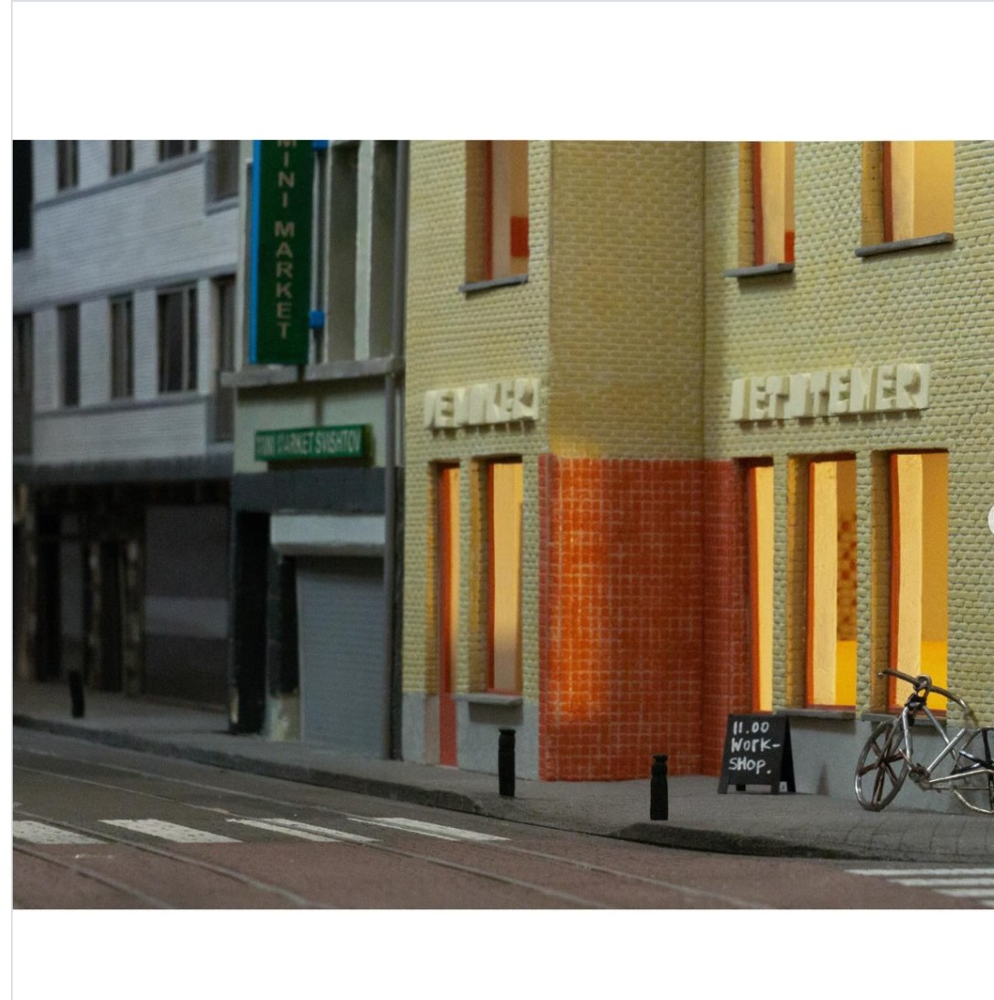

Januari 2024 — MSc1 House, Interiors Buildings Cities
Het Karwei aan de Sleepstraat in Gent is een buurthuis waar bewoners samenkomen en uiteenlopende klussen kunnen doen in de ruimtes door het hele gebouw.
De begane grond nodigt uit om je handen vuil te maken op de betonvloeren en kleurrijke tegels, je fiets te laten repareren door "De maker", of mee te doen aan schilder- of keramiekworkshops in "Het atelier". Door het hele gebouw geeft de houten constructie en houten kern richting en structuur aan de ruimtes, wat direct zichtbaar is op de eerste verdieping. Daar bevindt zich een buurtkeuken die elke woensdag en zaterdag een gerecht serveert, te genieten in "De zaal". Daarnaast kunnen bewoners gebruikmaken van "De woonkamer", "Het hok" en "Het Terras" om te werken, te ontspannen of samen te komen.


